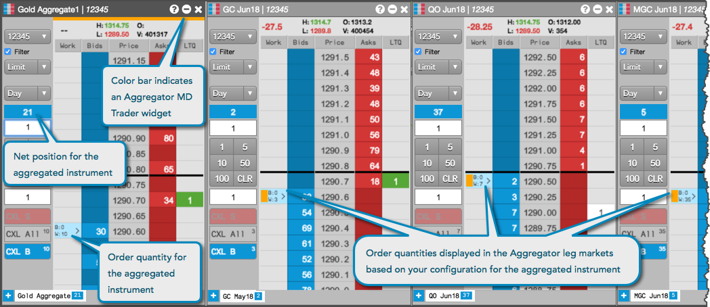
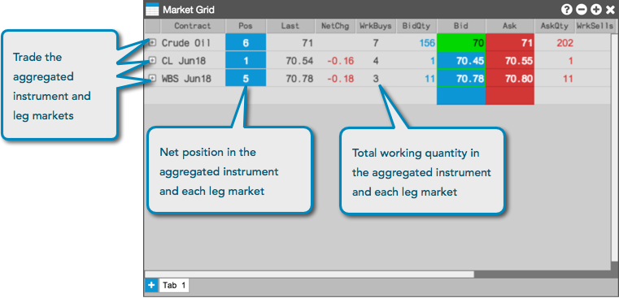
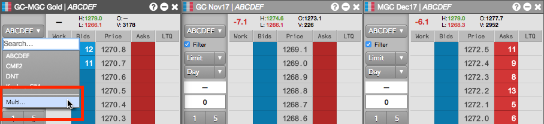
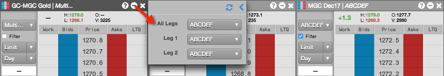
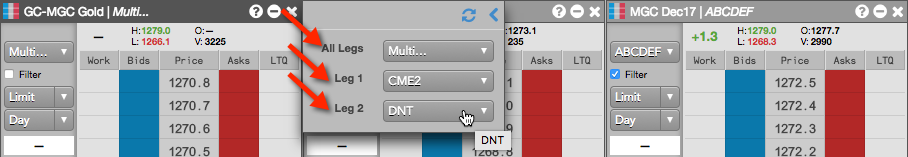
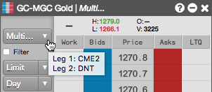

You can submit an aggregated instrument order the same way you submit an order for an exchange-traded instrument. For an aggregated instrument, you can submit an order in the MD Trader widget or Market Grid widget.
An order for a synthentic Aggregator instrument can be submitted as a native Limit order or TT Iceberg order, which allows you to execute the total quantity of your order in smaller, disclosed portions.
Click in the aggregated quantity column at a price level to buy or sell the aggregated instrument. Aggregator uses the parameters you set in the Aggregator Configuration dialog box to determine the prices at which the legs are traded. If you launched the aggregated instrument by selecting Open MD Trader with Legs, working orders appear in the MD Trader widgets for each leg.
Whenever you trade an aggregated instrument, all working orders in the Aggregator leg panes have a vertical color bar on the left side in the Work column. This color bar designates a working Aggregator order and uses the leg color you assigned to the aggregated instrument in the Aggregator Configuration dialog box.
Note: If the individual legs of an aggregated instrument are displayed in MD Trader, you can enter an order for any of the legs by clicking in the Bid or Ask quantity column for the specific leg at the desired price level. Orders entered directly into the leg markets will not display the color bar.
The following image shows an Aggregator MD Trader opened with separate MD Trader widgets for each leg market that comprises the aggregated instrument:

To view market data and enter orders for your aggregated instruments using the Market Grid widget, click launch or drag and drop your aggregated instrument from the Aggregator Manager window into the Market Window. You can enter an order for the aggregated instrument the same as for exchange-defined instruments: Click a price to open a floating order entry widget, select an order type or account as needed, and submit your order.
When entering orders for aggregated instruments in the Market Grid, consider the following:
Aggregator uses the parameters you set in the Aggregator Configuration dialog box to determine the prices at which the legs are traded. Working orders appear for the aggregated instrument and each leg in the Market Grid:

The Aggregator MD Trader provides you with the ability to select separate accounts for routing the child orders of a parent aggregator order. For example, you can use separate accounts on different exchanges to submit orders, or split trading between separate accounts and different brokers.
When you launch an aggregated instrument, the legs are seeded automatically based on any order default account settings you may have configured. The default accounts may also be different per leg.
To submit an Aggregator order using multiple accounts:
Click the account selector in the Aggregator MD Trader and select Multi....

In the flyout panel that appears, click the account selector for each leg and select an account.
Your default account displayed in All Legs is used for routing the leg orders.

When you select a different account for each leg, then Multi... appears in All Legs and each separate account is displayed for Leg 1 and Leg 2, etc.

Configure and submit the aggregator order in the Aggregator MD Trader.
After submitting the order, the flyout panel closes and the orders are submitted into the market. The leg orders are routed using the different accounts you selected.
If you hover on the account selector in the Aggregator MD Trader, a tooltip appears and displays your account selections for each leg.

Using the Floating Order Book, you can delete a parent Aggregator order and leave the child order(s) working in the market. For more details, refer to Deleting parent orders in the Floating Order Book.